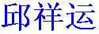

Xiangyun is my first name. As you may soon realize, it's actually rather difficult to pronounce. Well, you can call me Qiu (pronounced closely to letter "Q") instead, which is my last name.

is my name in Chinese. It's a JPG image file just in case your web browser can't display Chinese characters. Is it amazing that languages can be so different? Languages are very fun to learn, but easy to forget.To be perfectly honest, I think this is as much as I can tell you about myself. The truth is I don't like to boast, or do the opposite. It is also true that I haven't really figured out who I really am. At this moment, the following paragraph is what I managed to come up with.
Born in a chinese rural village, I grew up with mud and soil. Only discrete and blurry memories are left of my childhood. Ever since I went to school in 1983 as a first grader, schooling has turned into the biggest part of my life. Five years of primary school; three years of middle school, three years of high school; finally, after five years of college, in July,1999, I received my bachelor's degrees from University of Science and Technology of China . After another five years of my life, my dream to earn a Ph.D. degree came true at Michigan State University. I can't imagine how thrilled I was by the moment. School is a small world, but still endowed me expriences I will remember forever.
Curiosity of the nature has been the inspiration of my life, while the love from people around me has always been the greatest source of happiness. My life in front of me is also unknown, and I personally believe it's this uncertainty that makes life so attractive to me.
| Sept. 99 | ~ | Aug. 04 | Michigan State University | Ph.D. in Physics |
| Sept. 94 | ~ | July 99 | University of Science and Technology of China | B.S. in Physics & Engineering |
| Sept. 91 | ~ | July 94 | Pei Xian High School | College Entrance Exam taken |
| Jan. 91 | ~ | July 91 | Yan Ji Middle School | High school Entrance Exam taken |
| Sept. 88 | ~ | Jan. 91 | Da An Si Middle School | Transfered to YanJi MS |
| Sept. 83 | ~ | July 88 | ZhuQuZhuang Elementary School | Entering DaAnSi MS |